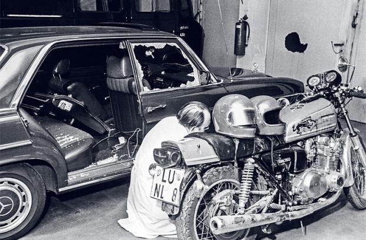

Fund des Fluchtfahrzeugs des Buback-Attentats
Nachdem die Attentäter das Fluchtfahrzeug vom Motorrad zum gestohlenen Alfa Romeo getauscht hatten, sind sie damit nach Sachsenheim in die Wiesenstraße, in die unmittelbare Nähe des Bahnhofs gefahren. Dort haben sie den Wagen abgestellt. Dieser wurde gegen 10:20 gefunden. Es liegt die Vermutung nahe, dass die Attentäter mit dem Zug weitergeflüchtet sind. Wohin sie geflüchtet sind, ist nicht abschließend geklärt, allerdings geht man davon aus, dass die gesamte Gruppe in die Niederlande geflüchtet ist.
Aufgrund verschiedener Zusammenhänge, unter anderem des Funds des Fluchtwagens und der Meldung von Bürgern, dass sie RAF-Mitglieder in Sachsenheim gesehen hätten, wurde nach einer Unterkunft der RAF, eine sogenannte Konspirative Wohnung, gesucht. Man ging davon aus, dass diese in der Nähe des Bahnhofs sein musste. Allerdings konnte dies nie bezeugt werden.

Das Mottorad der Täter und der beschädigte Wagen der Opfer.
Quelle: https://static.geo.de/bilder/04/b6/18909/article_image_big/64cf203f14d9fa46245b150c831e3ff6.jpg